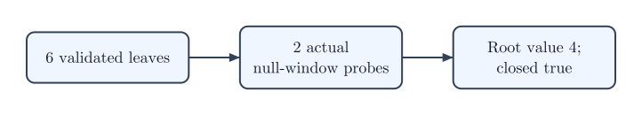
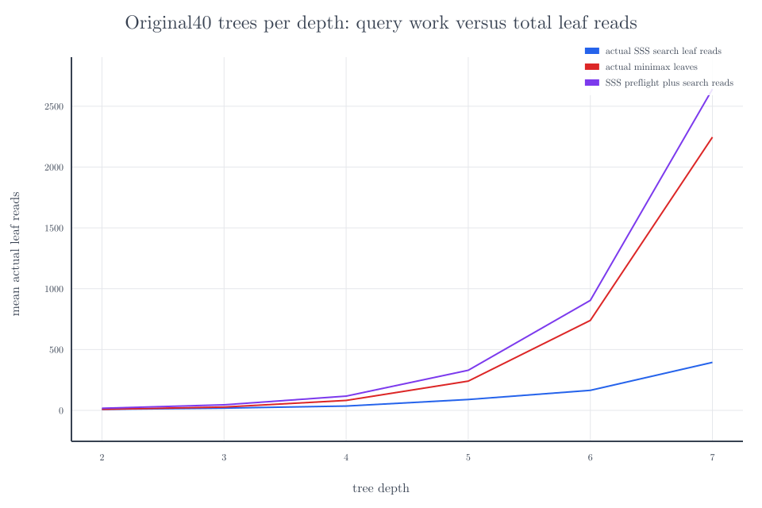
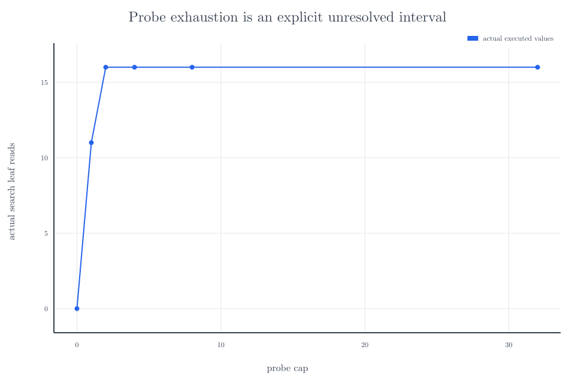
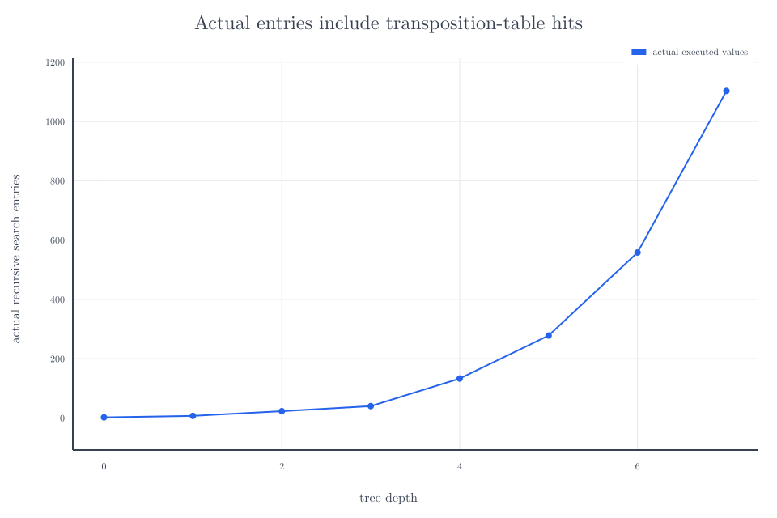

SSS* through memory search: actual probes and explicit preprocessing
Abstract
This implementation uses an upper-bound MTD driver around alpha-beta with transposition memory. Actual null-window probes and bound writes expose how the root interval closes. Complete-tree validation reads every leaf, so preprocessing and search work are reported separately.
Mechanism and mathematical scope
Begin with a finite upper guess from the validated leaves. Each root query uses adjacent window endpoints separated by the supplied value resolution; fail-low tightens the upper bound and fail-high raises the lower bound. Reuse lower/upper transposition bounds keyed by actual node identities. Stop when the driver bounds meet, or explicitly return unresolved on probe exhaustion. Resolution must not exceed the smallest distinct finite leaf gap. Floating adjacent endpoints use nextafter when ordinary addition/subtraction cannot move a bound. Classical SSS* dominance results concern specified ordered-tree query models; they do not prove lower total work for this validating implementation or arbitrary alpha-beta variants.
A tiny actual producing history
The table and native concept diagram read the same producing execution. Every block below is a complete editable C++ program.
#include <dm/dm.hpp>
int main() {
namespace a = dm::algorithms;
namespace g = dm::graphics;
std::filesystem::create_directories("build");
auto tree = a::sss_example_tree(2, 17);
auto r = a::sss_star_trace(tree, true);
std::print("| actual probe | alpha | beta | value | driver lower | driver upper | search leaf reads " "|\n| ---: | ---: | ---: | ---: | ---: | ---: | ---: |\n");
for (const auto &s : r.history)
std::print("| {} | {} | {} | {} | {} | {} | {} |\n", s.index, s.alpha,
s.beta, s.value, s.lower, s.upper, s.search_leaf_reads);
std::print("Converged {}; preflight leaf reads {}; actual bound writes {}.\n",
r.converged, r.preflight_leaf_reads, r.bounds.size());
g::Diagram concept_diagram(48, 1100);
concept_diagram.node("n0", {0, 0},
std::format("{} validated leaves",
r.preflight_leaf_reads));
concept_diagram.node("n1", {5, 0},
std::format("{} actual null-window probes", r.probes));
concept_diagram.node("n2", {10, 0},
std::format("Root value {}; closed {}", r.result.value,
r.converged));
concept_diagram.edge("n0", "n1").edge("n1", "n2");
concept_diagram.save_svg("build/sss_star_tiny.svg");
}| actual probe | alpha | beta | value | driver lower | driver upper | search leaf reads |
|---|---|---|---|---|---|---|
| 0 | 9 | 10 | 4 | -inf | 4 | 2 |
| 1 | 3 | 4 | 4 | 4 | 4 | 4 |
Converged true; preflight leaf reads 6; actual bound writes 9.

The retained original experiment
#include <dm/dm.hpp>
int main() {
namespace a = dm::algorithms;
namespace g = dm::graphics;
std::filesystem::create_directories("build");
std::vector<double> x, y, z, p;
std::print("| original depth | last minimax / SSS values | mean minimax leaves | mean SSS search leaves " "| mean preflight leaves | mean alpha-beta leaves |\n| ---: | --- | ---: | ---: | ---: | " "---: |\n");
for (int depth = 2; depth <= 7; ++depth) {
double mm = 0, ss = 0, pre = 0, ab = 0, vmm = 0, vss = 0;
for (int rep = 0; rep < 40; ++rep) {
auto tree = a::sss_example_tree(depth, 1000 + depth * 97 + rep);
auto m = a::minimax(tree, true);
auto s = a::sss_star_run(tree, true);
auto b = a::alpha_beta(tree, true);
if (!s.converged || m.value != s.result.value || m.value != b.value)
throw std::runtime_error("minimax disagreement");
mm += m.leaves_evaluated;
ss += s.result.leaves_evaluated;
pre += s.preflight_leaf_reads;
ab += b.leaves_evaluated;
vmm = m.value;
vss = s.result.value;
}
x.push_back(depth);
y.push_back(ss / 40);
z.push_back(mm / 40);
p.push_back((ss + pre) / 40);
std::print("| {} | {} / {} | {:.9g} | {:.9g} | {:.9g} | {:.9g} |\n",
depth, vmm, vss, mm / 40, ss / 40, pre / 40, ab / 40);
}
auto chart = g::RPlot::create();
chart.lines(x, y, "actual SSS search leaf reads", {37, 99, 235}).lines(
x, z, "actual minimax leaves", {220, 38, 38}).lines(
x, p, "SSS preflight plus search reads", {124, 58, 237}).title(
"Original40 trees per depth: query work versus total leaf reads").x_label("tree depth").y_label("mean actual leaf reads");
chart.save_svg("build/sss_star_original.svg");
}| original depth | last minimax / SSS values | mean minimax leaves | mean SSS search leaves | mean preflight leaves | mean alpha-beta leaves |
|---|---|---|---|---|---|
| 2 | 9 / 9 | 8.725 | 8.6 | 8.725 | 6.95 |
| 3 | 7 / 7 | 27.2 | 18.5 | 27.2 | 18.7 |
| 4 | 0 / 0 | 81.65 | 35.375 | 81.65 | 38.775 |
| 5 | 6 / 6 | 240.4 | 89.175 | 240.4 | 96.025 |
| 6 | -4 / -4 | 739.525 | 164.575 | 739.525 | 195.225 |
| 7 | 4 / 4 | 2245.775 | 394.475 | 2245.775 | 463.85 |

Explicit controls
#include <dm/dm.hpp>
int main() {
namespace a = dm::algorithms;
namespace g = dm::graphics;
std::filesystem::create_directories("build");
auto tree = a::sss_example_tree(3, 29);
std::vector<double> x, y;
std::print("| probe cap | actual probes | converged | lower | upper | search leaf reads |\n| ---: | " "---: | --- | ---: | ---: | ---: |\n");
for (std::size_t cap : {0, 1, 2, 4, 8, 32}) {
a::SSSOptions o;
o.max_probes = cap;
auto r = a::sss_star_run(tree, true, 1, o);
x.push_back(cap);
y.push_back(r.result.leaves_evaluated);
std::print("| {} | {} | {} | {} | {} | {} |\n", cap, r.probes,
r.converged, r.lower, r.upper, r.result.leaves_evaluated);
}
auto plot = g::RPlot::create();
plot.lines(x, y, "actual executed values", {37, 99, 235}).points(
x, y, {37, 99, 235}, 4).title("Probe exhaustion is an explicit unresolved interval").x_label("probe cap").y_label("actual search leaf reads");
plot.save_svg("build/sss_star_controls.svg");
}| probe cap | actual probes | converged | lower | upper | search leaf reads |
|---|---|---|---|---|---|
| 0 | 0 | false | -inf | inf | 0 |
| 1 | 1 | false | -inf | 8 | 11 |
| 2 | 2 | true | 8 | 8 | 16 |
| 4 | 2 | true | 8 | 8 | 16 |
| 8 | 2 | true | 8 | 8 | 16 |
| 32 | 2 | true | 8 | 8 | 16 |

Actual selected work and sensitivity
#include <dm/dm.hpp>
int main() {
namespace a = dm::algorithms;
namespace g = dm::graphics;
std::filesystem::create_directories("build");
std::vector<double> x, y;
std::print("| depth | validated nodes | actual search visits | actual table hits | root probes |\n| " "---: | ---: | ---: | ---: | ---: |\n");
for (int d = 0; d <= 7; ++d) {
auto tree = a::sss_example_tree(d, 71);
auto r = a::sss_star_run(tree, true);
x.push_back(d);
y.push_back(r.result.nodes_visited);
std::print("| {} | {} | {} | {} | {} |\n", d, r.preflight_nodes,
r.result.nodes_visited, r.table_hits, r.probes);
}
auto plot = g::RPlot::create();
plot.lines(x, y, "actual executed values", {37, 99, 235}).points(
x, y, {37, 99, 235}, 4).title("Actual entries include transposition-table hits").x_label("tree depth").y_label("actual recursive search entries");
plot.save_svg("build/sss_star_work.svg");
}| depth | validated nodes | actual search visits | actual table hits | root probes |
|---|---|---|---|---|
| 0 | 1 | 2 | 1 | 2 |
| 1 | 5 | 7 | 2 | 2 |
| 2 | 15 | 23 | 13 | 3 |
| 3 | 52 | 40 | 9 | 2 |
| 4 | 139 | 133 | 73 | 7 |
| 5 | 480 | 278 | 92 | 7 |
| 6 | 1447 | 558 | 270 | 13 |
| 7 | 6498 | 1103 | 309 | 8 |

API and interpretation
Leaf flags, children, finite values, resolution and depth are checked before search. Zero probe cap returns an unresolved interval; the legacy value-only wrapper throws on unresolved exhaustion. Returned best_child remains-1 because no extra principal-variation extraction is performed. Search counters exclude the separately disclosed full validation/bound-initialization scan. Histories own node IDs rather than pointers.
Reusable producers, fixtures and histories live in the canonical C++ library. Captured records own their values and do not come from a separate report replay. Selected counters and record/scalar policies are specified at their API boundaries; they are not peak-byte or wall-time budgets. Synthetic structural inputs are controlled fixtures for these mechanisms.
References
- Stockman, A Minimax Algorithm Better Than Alpha-Beta?, Artificial Intelligence12 (1979),179-196
- Plaat et al., Best-First Fixed-Depth Minimax Algorithms, Artificial Intelligence87 (1996),255-293
Verified in the shared ten-document batch: 58 scoped native cases;20 directly
instrumented ASan/UBSan cases;90 executable public examples;416/416 definitions
across25 full scopes;10 hovers;1968 independent records/417332 checks;frozen
comparisons across all ten families with SIP returned-iterate correction
recorded;14 checkout/installed standalone headers and linked ten-family
consumer;40 executed programs and40 inspected figures with both exports.
Receipts: build/mepml-conversion/batch-374-383/.